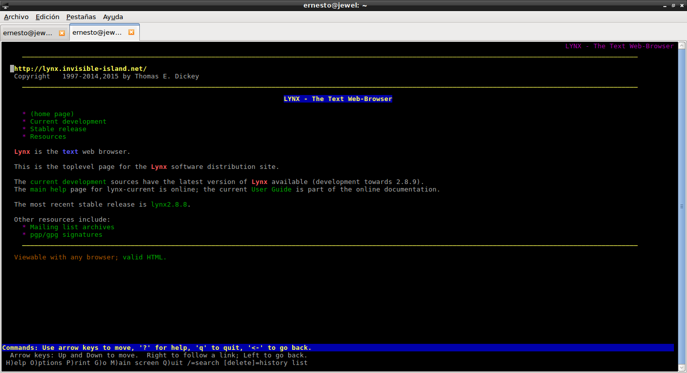

Correr aplicaciones de escritorio desde un contenedor Docker
Publicado el jue 26 mayo 2016 en Tutorial de Docker • 2 min de lectura
Este artículo se muestra de manera sencilla como correr varias aplicaciones gráficas desde contenedores Docker.
El artículo se basa en un artículo en inglés sobre el tema, pueden verlo en el siguiente enlace.
Los artículos anteriores sobre Docker son:
-
Iniciando Django con docker usando docker-compose con postgresql como microservicio.
-
Crear un entorno de Integración y Despligue continue con Docker para node.js.
-
Ejecutar una prueba de unittest en Python con un contenedor Docker.
-
Montar una Plataforma como servicio (PaaS) con Dokku (docker).
-
Instalar Jenkins por medio de Docker y crear una imagen Docker de Jenkins
-
Crear un contenedor Docker como entorno de desarrollo para Sails.js.
Lynx: Es un navegador para la cónsola, muy usado hace mucho. Para ejecutarlo con Docker se tiene el siguiente comando:
docker run -it --name lynx1
Esto ejecuta la aplicación desde un contenedor como lo muestra la siguiente figura:

Se puede visitar el repositorio del contenedor en Docker hub y ver el archivo Dockerfile del repositorio que se encuentra en el siguiente enlace:
# Run Lynx in a conatiner
#
# docker run --rm -it \
# --name lynx \
# jess/lynx github.com/jfrazelle
#
FROM debian:jessie
MAINTAINER Jessica Frazelle <jess@docker.com>
RUN apt-get update && apt-get install -y \
lynx \
--no-install-recommends \
&& rm -rf /var/lib/apt/lists/*
ENTRYPOINT [ "lynx" ]
En el enlace que pasé al inicio del artículo hay otras aplicaciones de escritorio que se pueden ejecutar, y al ver los Dockerfile se tiene una idea de como crear nuestras propias aplicaciones que corran desde un contenedor Docker.
¡Haz tu donativo! Si te gustó el artículo puedes realizar un donativo con Bitcoin (BTC) usando la billetera digital de tu preferencia a la siguiente dirección: 17MtNybhdkA9GV3UNS6BTwPcuhjXoPrSzV
O Escaneando el código QR desde la billetera: